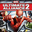

MUA2Detalles
 |
|
| Tiempo de juego | No Jugado |
| Última actividad | Nunca |
| Añadido | 10/12/2025 11:12:09 |
| Modificado | 10/12/2025 11:15:30 |
| Estado de finalización | Not Played |
| Librería | Playnite |
| Fuente | |
| Plataforma | PC (Windows) |
| Fecha de lanzamiento | 15/9/2009 |
| Puntuación de la Comunidad | 74 |
| Puntuación de la Crítica | 68 |
| Puntuación de usuario | |
| Género | Adventure Hack and slash/Beat 'em up Role-playing (RPG) |
| Desarrollador | Vicarious Visions |
| Editor | Activision |
| Característica | Co-Operative Multiplayer Single Player |
| Enlaces | |
| Tag | Voz y Texto en Inglés |
Descripción
De nuevo, hay que "bancarse" el inglés, pero tenés enfrente una de las adaptaciones más zarpadas de los cómics. Marvel: Ultimate Alliance 2 toma el arco de la legendaria Civil War y te mete en el medio del quilombo: ¿Te ponés del lado de Iron Man (Pro-Registro) o del Capitán América (Anti-Registro)?
A diferencia del primero, acá la mecánica estrella son las Fusiones. Podés combinar los poderes de dos héroes cualquiera para limpiar la pantalla con ataques devastadores. Ver a Thor recargando el escudo del Cap con rayos, o a Hulk usando a Wolverine como proyectil, es cine puro.
Esta versión de 2016 (aunque técnicamente es un port básico) te asegura que corre en tu nave moderna con soporte para joysticks actuales, manteniendo intacto ese vicio del cooperativo local para 4 jugadores.
Es la definición de "fichín" de superhéroes: piñas, poderes y una historia que divide aguas. Ideal para juntarse con amigos, pedir unas pizzas y discutir a los gritos quién tiene razón.
A diferencia del primero, acá la mecánica estrella son las Fusiones. Podés combinar los poderes de dos héroes cualquiera para limpiar la pantalla con ataques devastadores. Ver a Thor recargando el escudo del Cap con rayos, o a Hulk usando a Wolverine como proyectil, es cine puro.
Esta versión de 2016 (aunque técnicamente es un port básico) te asegura que corre en tu nave moderna con soporte para joysticks actuales, manteniendo intacto ese vicio del cooperativo local para 4 jugadores.
Es la definición de "fichín" de superhéroes: piñas, poderes y una historia que divide aguas. Ideal para juntarse con amigos, pedir unas pizzas y discutir a los gritos quién tiene razón.